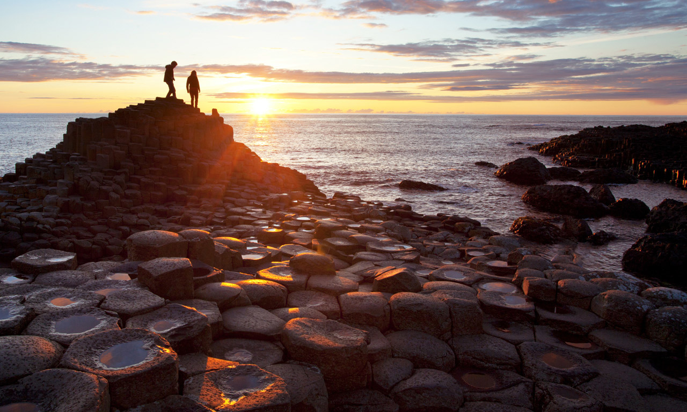

"The jewel in the crown of the fabulous coast of Antrim."
The Giant's Causeway is an area of about 40,000 interlocking basalt columns, the result of an ancient volcanic eruption. It is located in County Antrim on the north coast of Northern Ireland, about three miles (4.8 km) northeast of the town of Bushmills.
It was declared a World Heritage Site by UNESCO in 1986, and a national nature reserve in 1987 by the Department of the Environment for Northern Ireland. The tops of the columns form stepping stones that lead from the cliff foot and disappear under the sea. Most of the columns are hexagonal, although there are also some with four, five, seven or eight sides. The tallest are about 12 metres (39 ft) high, and the solidified lava in the cliffs is 28 metres (92 ft) thick in places.
Much of the Giant's Causeway and Causeway Coast World Heritage Site is today owned and managed by the National Trust and it is one of the most popular tourist attractions in Northern Ireland. The remainder of the site is owned by the Crown Estate and a number of private landowners
Some of the structures in the area, having been subject to several million years of weathering, resemble objects, such as the Organ and Giant's Boot structures. Other features include many reddish, weathered low columns known as Giants Eyes, created by the displacement of basalt boulders; the Shepherd's Steps; the Honeycomb; the Giant's Harp; the Chimney Stacks; the Giant's Gate and the Camel's Hump.
| Adult Ticket(s) | €6.00 |
| Child u16 Ticket(s) | FREE |
| Senior/Student/Disabled Ticket(s) | €4.50 |
Legend says that Irish giant Fionn Mac Cumhaill (Finn McCool) created the causeway to travel to Scotland and fight his rival Benandonner, but came back when he saw how big he was. His solution was to dress up as his own “baby” son, and when Benandonner figured out how big his “Da” must be, he ran back ripping up the causeway as he went.
Various rare plant species have been identified on cliffs and nearby rock formations surrounding the Giants causeway such as vernal squill, frog orchid and sea fescue.
The Giant’s Causeway was actually formed by intense volcanic activity about 50 million years ago. As the lava rapidly cooled, it contracted into the distinctive shapes.